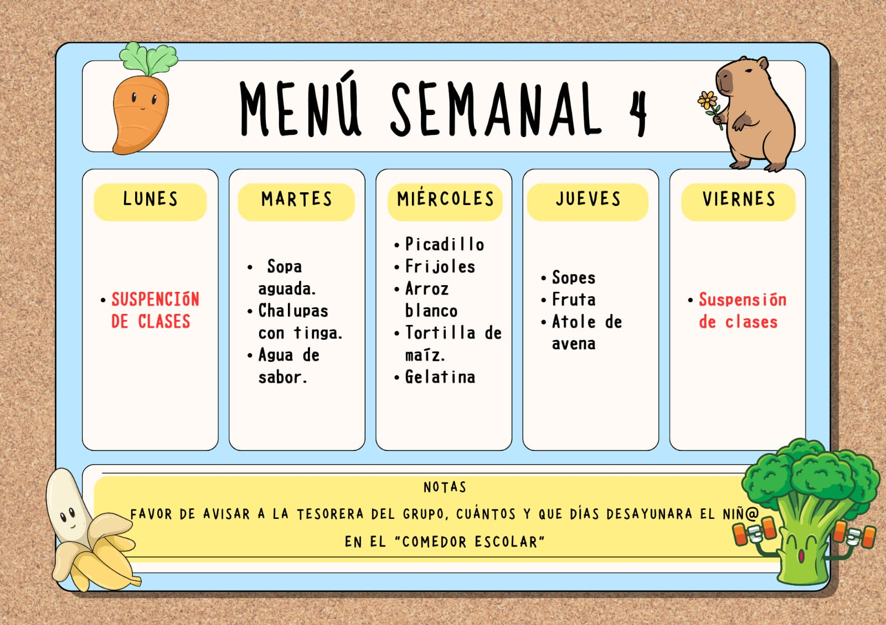
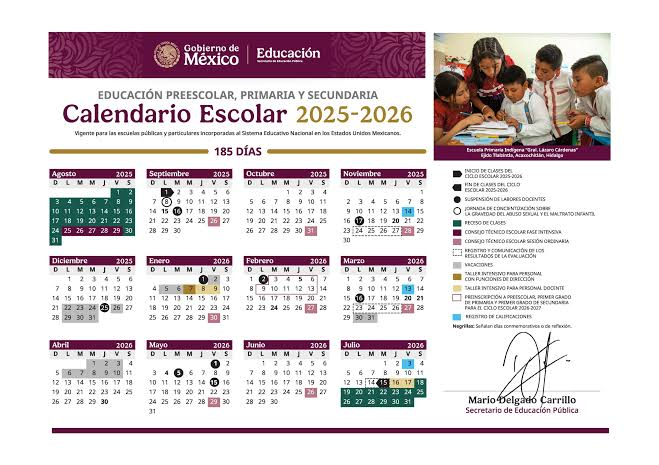

Duración: 6 años.
Modalidad: Presncial.
Descripción: Educación básica enfocada en el desarrollo académico, social y emocional de los alumnos.
El Perfil de Egreso es el conjunto de aprendizajes, actitudes y valores que formarán parte de tu
personalidad cuando termines los estudios de educación básica; es decir, la conformación de tu perfil
inicia desde la educación preescolar, continua durante la educación primaria y concluye con la educación
secundaria.
El resultado de los logros educativos se agrupan en Rasgos Deseables, los cuales son once y permitirán
que:
A continuación, puedes conocerlos dando clic en el siguiente video:
Ver video

Se solicitan documentos del alumno que solicita inscripción